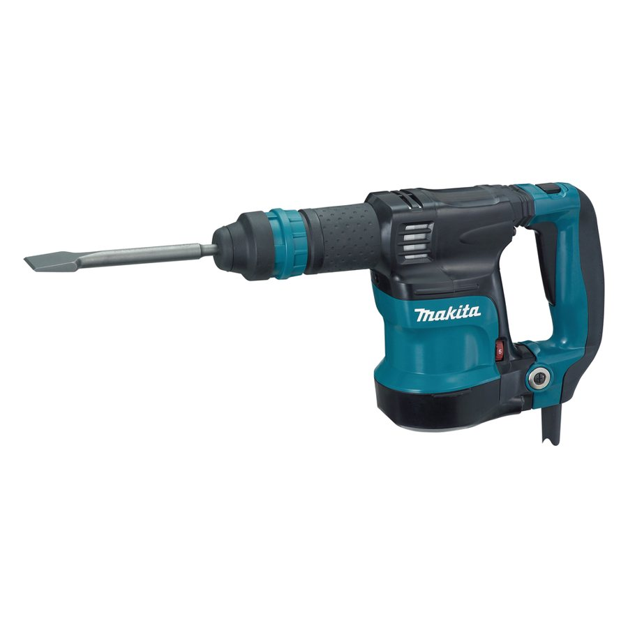
参考图片. 仅示意产品类型，并非中国制造商的产品。
轻型SDS-plus凿锤(约3公斤)
带SDS-plus夹头的轻型市电凿锤,用于瓷砖、抹灰、开槽和轻型拆除——无钻孔功能。
技术参数
| 额定功率 | 750瓦(列表属性;有一份数据表称950瓦——需澄清);参考Makita HK1820:550瓦 |
|---|---|
| 冲击能量 | 5焦(列表属性;有一份数据表称7焦——需澄清);参考Makita:3.1焦 |
| 冲击频率 | 3,500次/分;参考Makita:0–3,200次/分 |
| 工具夹头 | SDS-plus(快换) |
| 重量 | 3.5公斤;参考Makita:3.3公斤(不含电缆) |
| 配置 | 12档可调凿位、360°辅助手柄、减振系统、锁定开关 |
| 电压 | 220–240伏(另有120伏版本) |
| 供货范围 | 2支SDS-plus凿子14×280毫米、备用碳刷、塑料工具箱 |
内部
详情与联系方式
目前找到的唯一一家提供具体5公斤型号挂牌(MP0518)的供应商,列有价格(500件起订时42–45美元)、贸易术语和港口(上海/宁波);店铺称已通过CCC、GS和CE认证(未按型号证明,须索取证书)。 企业资料:永康的工贸企业,是否为制造商未经核实。
更多
价差包含品牌、服务、保修和合规文件;中国价格不含运费、关税、进口增值税和认证。德国价格为最低零售商报价(billiger.de,不含运费),并非标价。
- 到岸成本
- €34.81
- 销售价（净价）
- €239.95
- 利润率
- €205.14 · 85.5%
- 中国目标价
- €157.65
- 相比德国采购节省
- 87.7%
- 最小起订量
- 500台
- 价格条款
- Listing
每件，净价. 中国价格为挂牌价（未议价）。运费、关税和手续费为估算值；进口增值税可作为进项税抵扣。 假设：按产品组计运费，手续费 3%，售价比德国市场价低 15%，目标利润率 25%。
产品描述
带SDS-plus夹头的轻型凿锤(凿墙锤)适用于电锤过重、破碎锤又大材小用的场合:铲除瓷砖和抹灰、为线路开槽、修整砖石。
更多
该设备无旋转,仅有冲击,既减重又便于单手操控。Mingpu的型号MP0407据列表重3.5公斤,凿位可12档调节,配360度辅助手柄、减振系统和锁定开关,随机附带两支14×280毫米SDS-plus凿子和塑料工具箱。参考机型Makita HK1820为550瓦、单次冲击能量3.1焦、重3.3公斤。对欧盟市场而言,合规文件、含振动和噪声值的德语说明书及备件供应至关重要。
海关
| 海关编码 | 84672985 |
|---|---|
| 关税税率 | 2.7 % |
标准与标识（德国/欧盟）
2006/42/EG, ab 20.01.2027 (EU) 2023/1230机械指令,自2027年1月20日起由机械法规取代:CE符合性声明和技术文档EN 62841-1 / EN 62841-2-6手持式电动工具安全:通用要求及锤类产品的特殊要求2014/30/EU (EMV)电磁兼容(EN 55014-1/-2、EN 61000-3-2/-3-3)2011/65/EU (RoHS)电气电子设备中有害物质限制2000/14/EG户外噪声指令:手持式混凝土破碎机和镐的保证声功率级及标识ElektroG / (EU) 2023/988 (GPSR)在stiftung ear进行WEEE注册及回收义务;在线销售的欧盟责任人和标识
内部 · 备注
电商潜力
价格锚点:billiger.de上Makita轻型凿锤HK1820含税335.93欧元起(27个报价,截至2026年11月2日);据前期扫描Contorion报价553.00欧元(建议零售价876.57欧元),复查时该页面无法打开(HTTP 403),因此不作为锚点;Makita将其描述为用于轻型凿削、550瓦、3.1焦的设备。
更多
目标人群为处理瓷砖、抹灰和开槽的瓦工、干式施工人员、电工和翻新工。中国货(列表价34美元起)远低于品牌价,缺少经核实的中端价格锚点。风险:电器产品存在退货、保修和备件需求、ElektroG义务、噪声和振动声明;参考机型凿削振动18 m/s²,限制作业时长。可与SDS-plus凿子套装搭配销售。
需向供应商索取
- 要求认可实验室针对MP0407这一确切型号出具符合性声明和检测报告(EN 62841-1/-2-6、EMC、RoHS);澄清功率(750瓦与950瓦)和冲击能量(5焦与7焦)的矛盾。
- 安排噪声和振动值测量(2000/14/EC声功率级、凿削总振动值);要求带数值的德语使用说明书。
- 冲击机构耐久测试(润滑、碳刷、温升)和工具箱跌落测试;备件清单和保修条款须书面确认。
- 检查电源线和插头(Schuko/CEE 7/7、线型H05RR-F、长度)是否符合欧盟要求;记录保护绝缘和绝缘测量。
- 凿子:检查SDS-plus柄、硬度和热处理;供货含2支凿子,询问配件组合。
- 铭牌注明制造商/进口商、欧盟责任人、序列号和WEEE标志;澄清ElektroG注册;样品及装运前检验(AQL)。
来源
价格为每台,含塑料工具箱和2支凿子(依据列表);同一型号MP0407的三个列表价格相同。各列表间技术数据相互矛盾(功率750或950瓦、冲击能量5或7焦、电压220–240/120伏);属性(750瓦、5焦)在三份列表中的两份出现。价格不含运费、关税、进口增值税和认证费用。
搭配购买
卖家与本产品一起销售的配件、耗材和相关产品。
升级款
卖家作为追加销售推荐的高端或专业款。

本类别其他产品
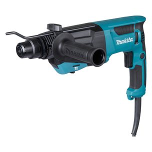
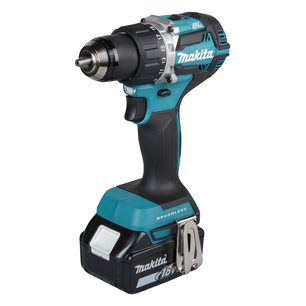
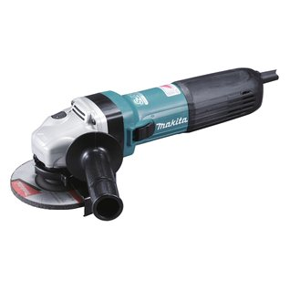
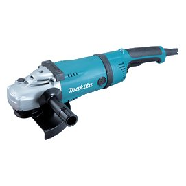
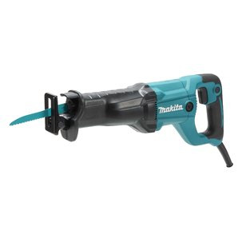
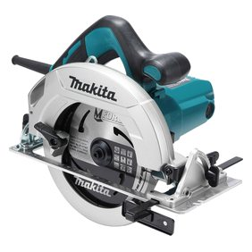
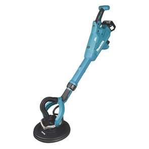
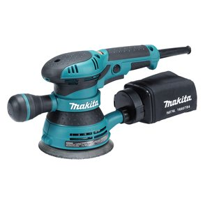
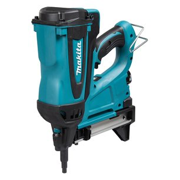
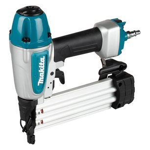
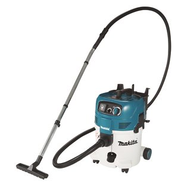
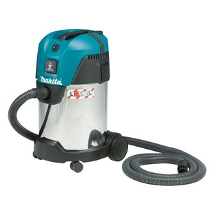
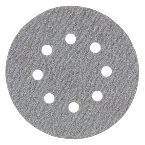
交叉销售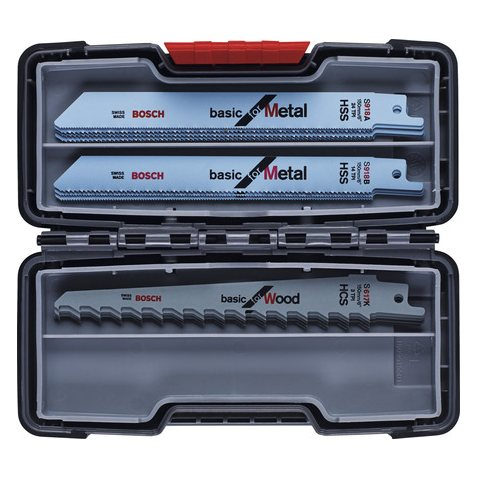
交叉销售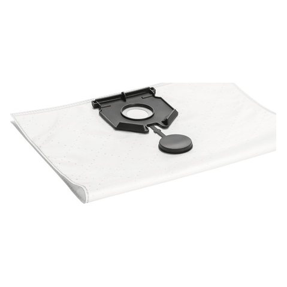
交叉销售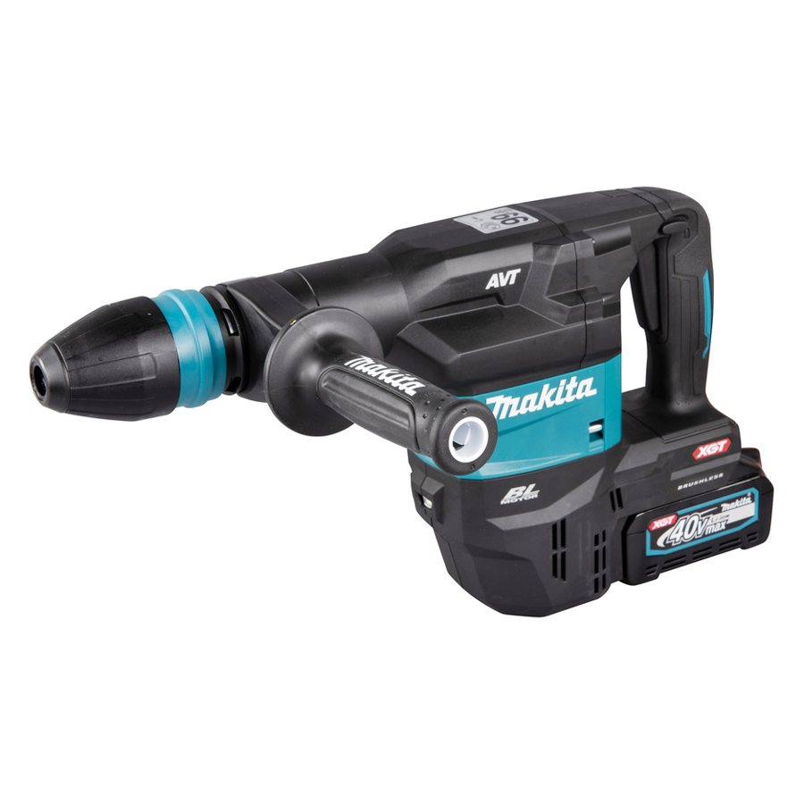
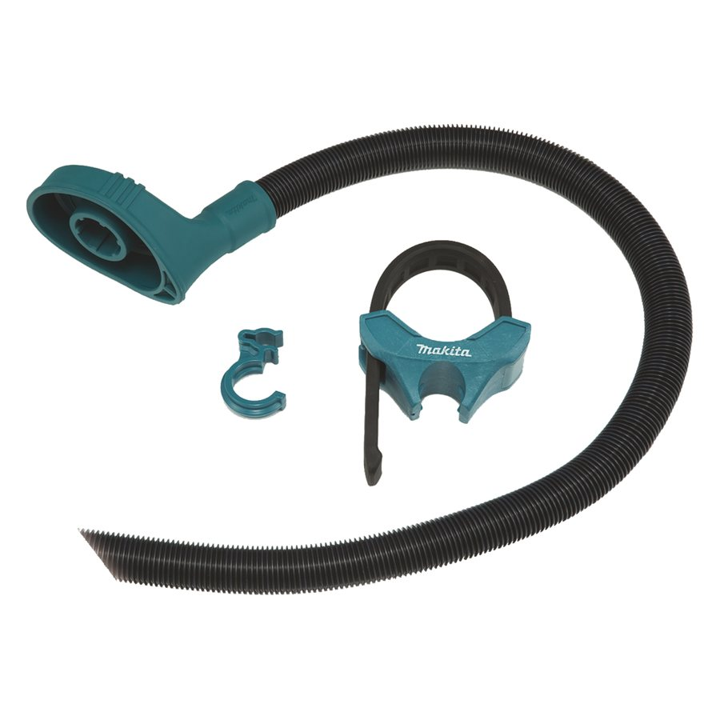
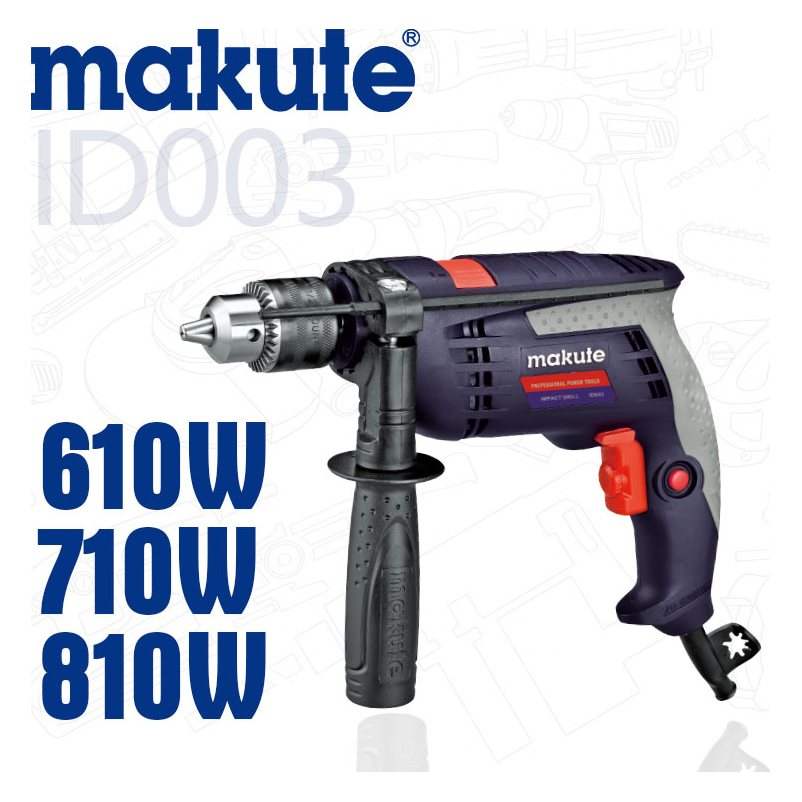
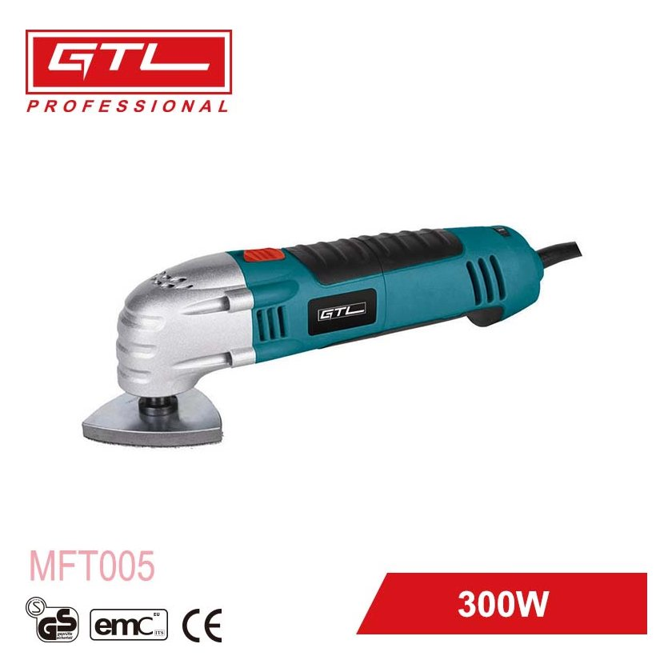
潮流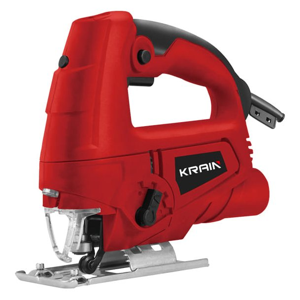
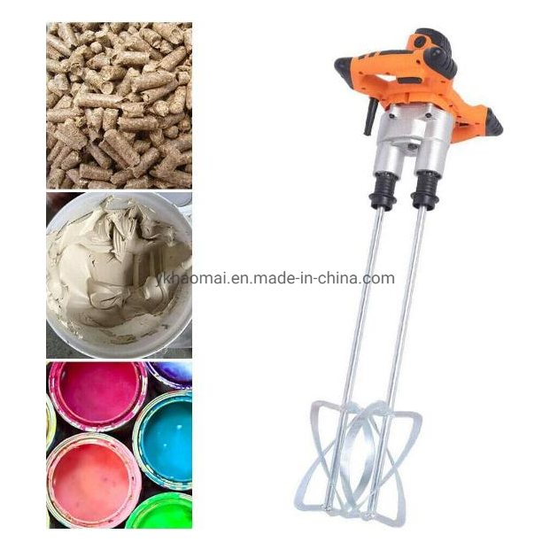
交叉销售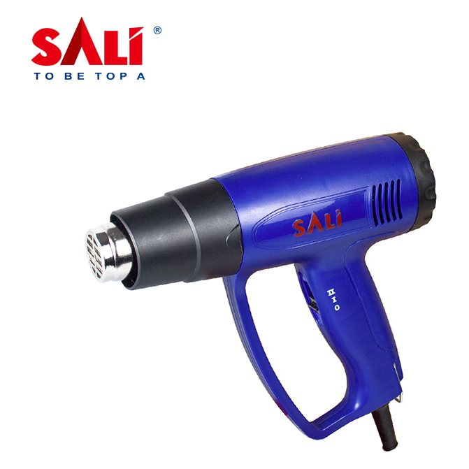
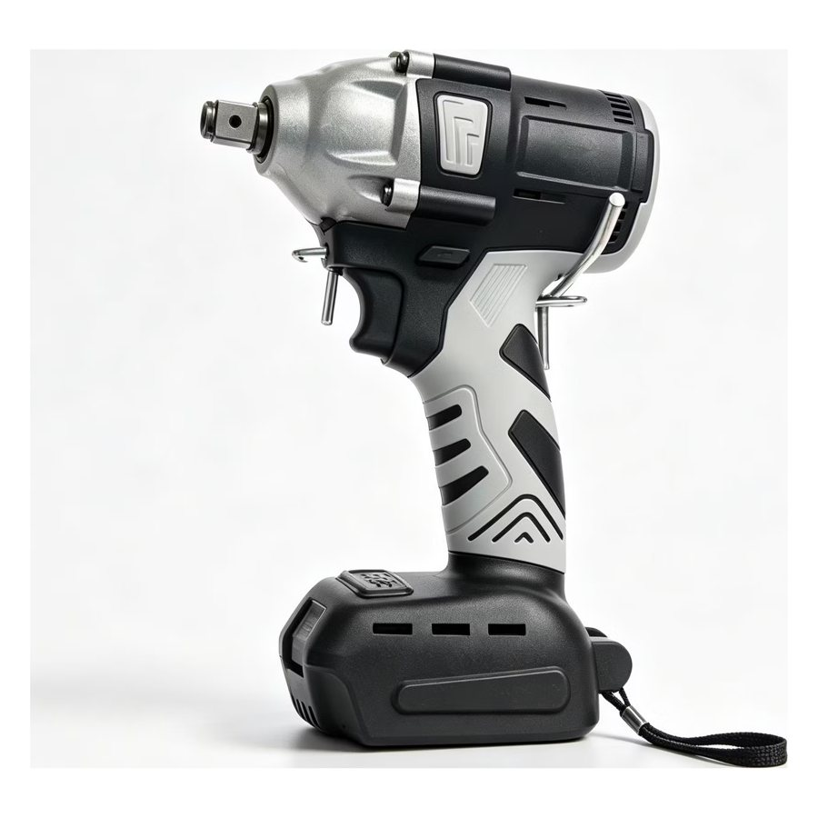
潮流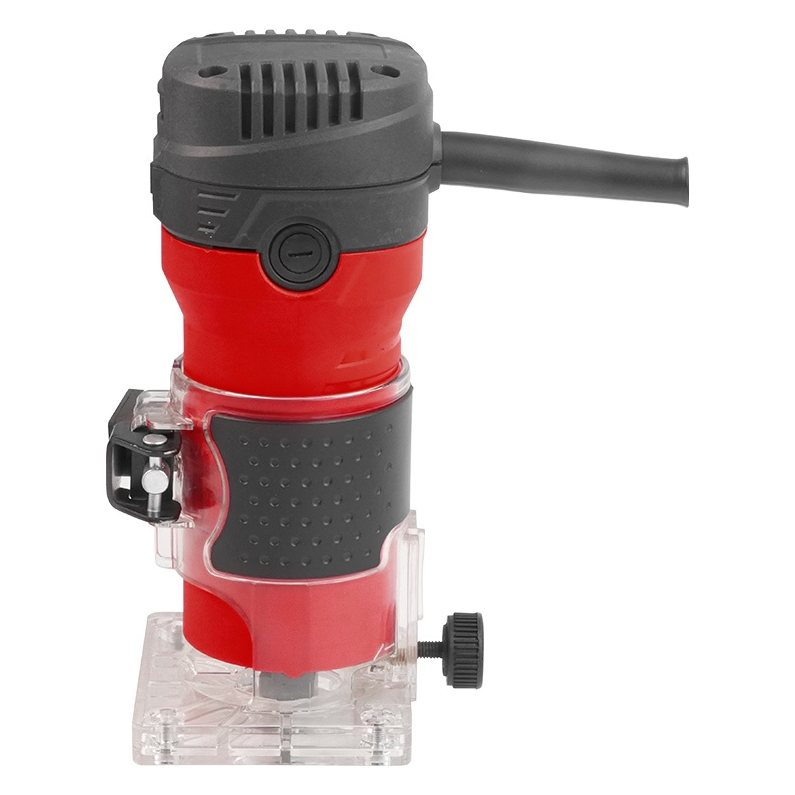
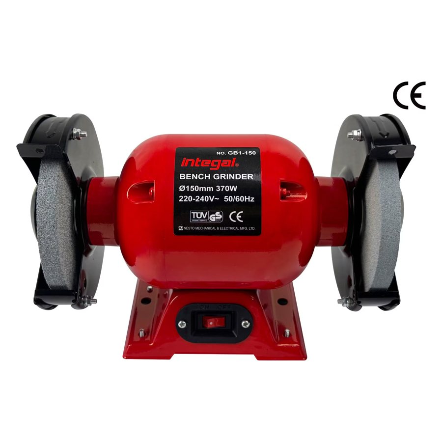
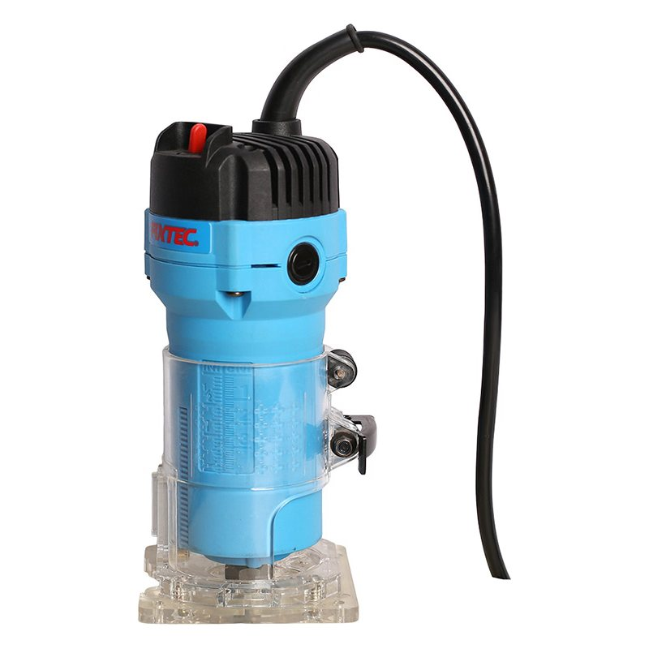
交叉销售